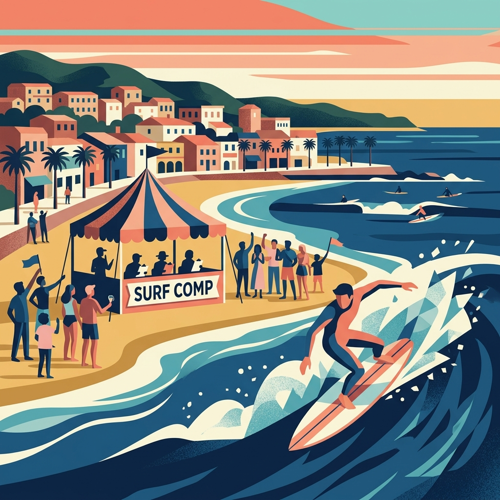
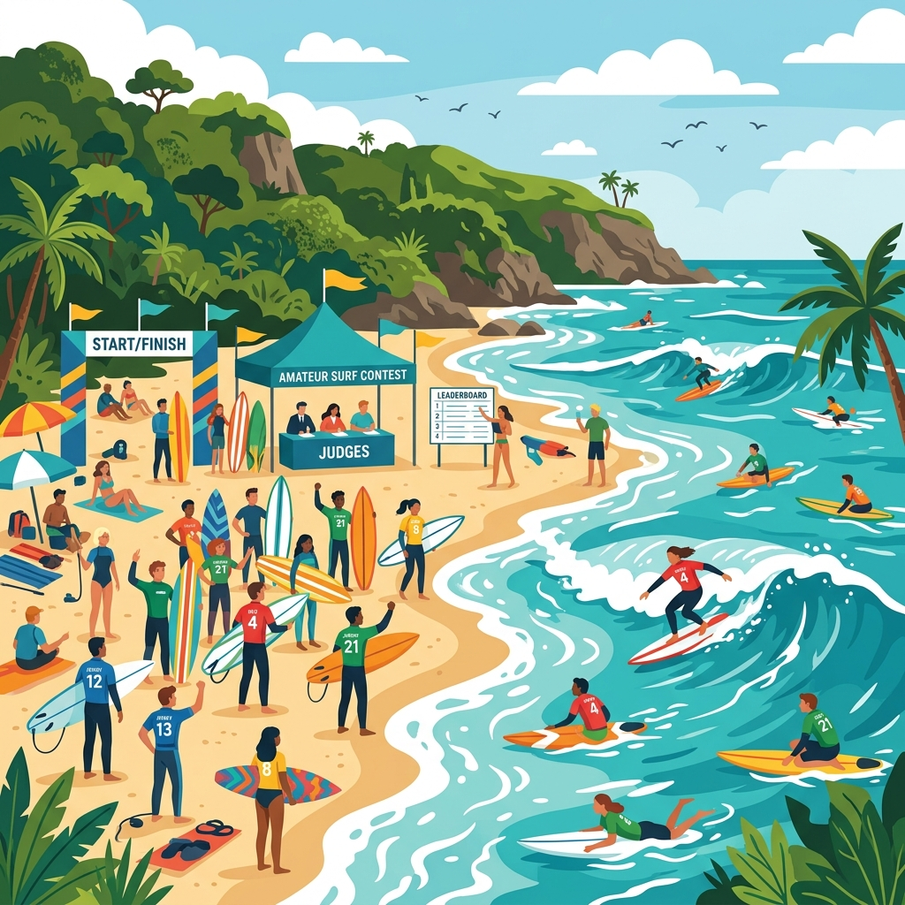
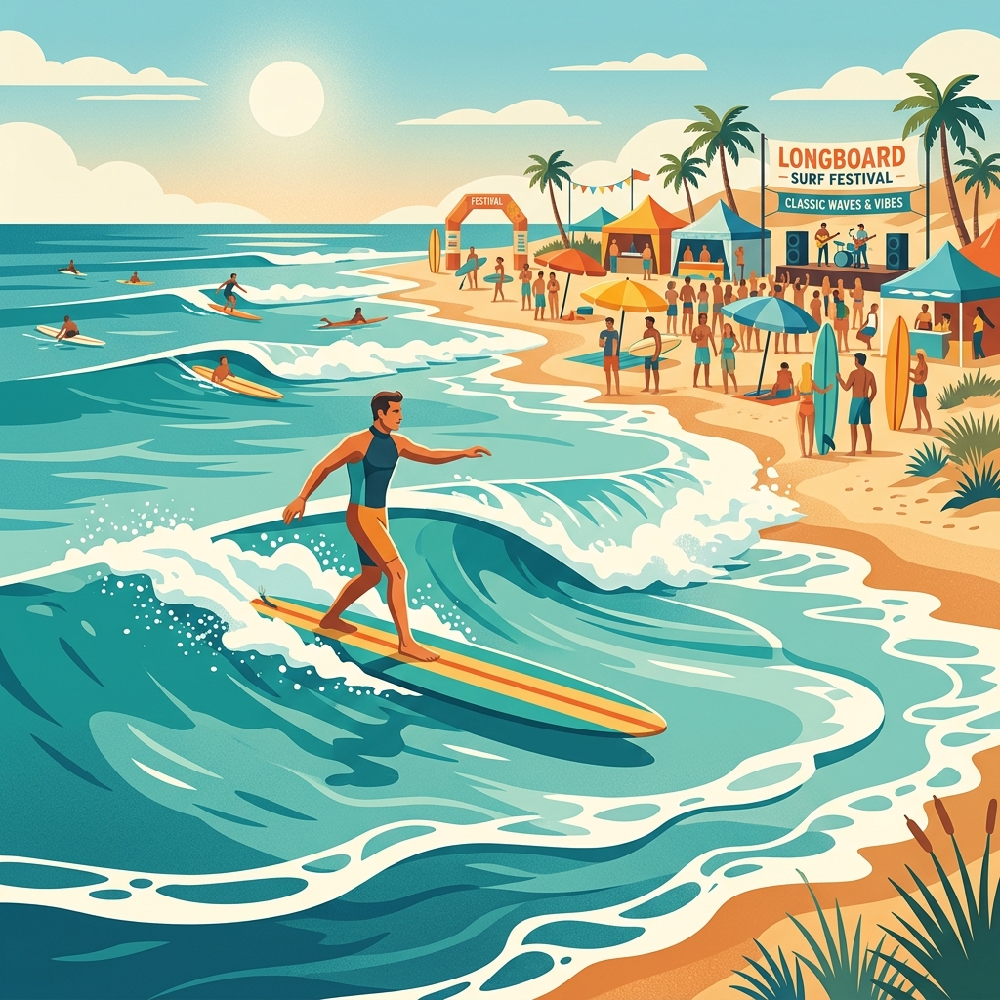
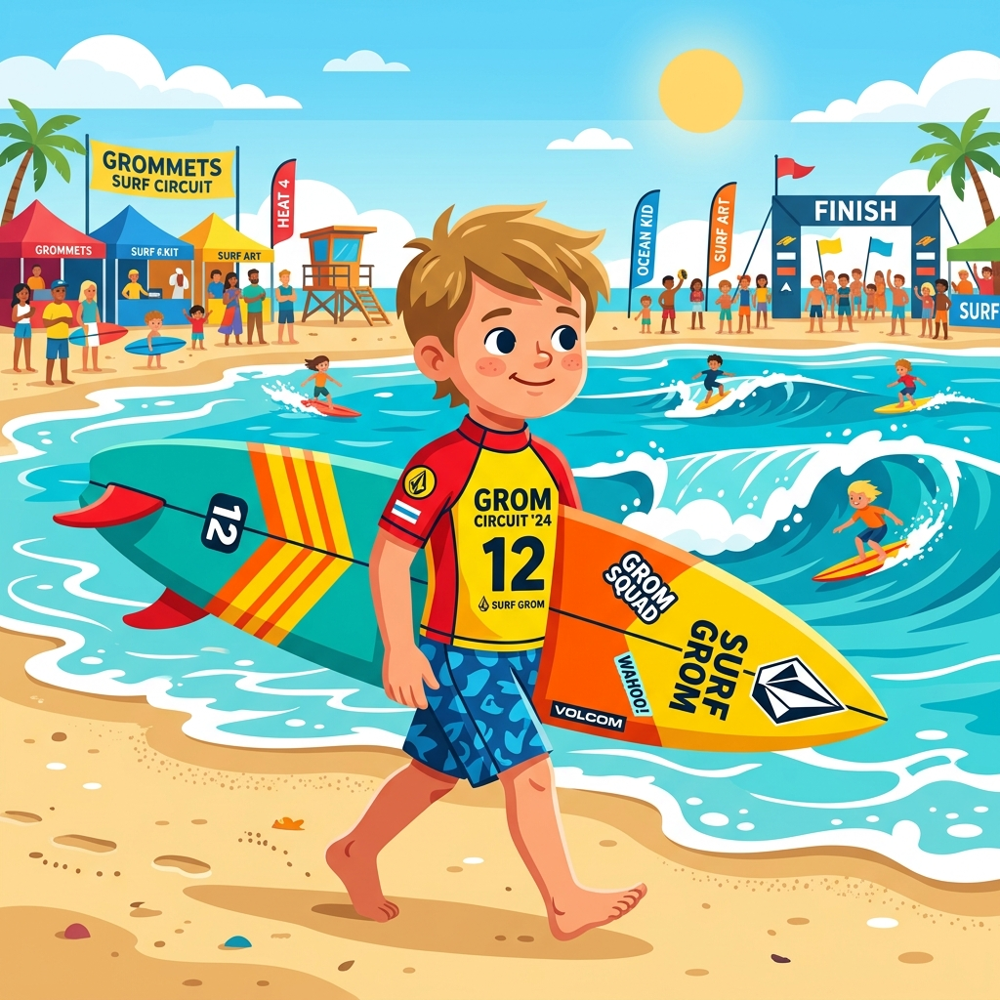

Imbituba Surf Open
Local: Praia da Vila
Data: 15 e 16 de Novembro
O campeonato mais tradicional da cidade, com altas ondas e reunindo a elite do surfe local.
Acompanhe os eventos e competições de surfe em Imbituba e região.
Fique por dentro das datas, categorias e locais dos principais circuitos que movimentam a cena do surfe na nossa região.

Local: Praia da Vila
Data: 15 e 16 de Novembro
O campeonato mais tradicional da cidade, com altas ondas e reunindo a elite do surfe local.

Local: Praia do Rosa (Sul)
Data: 05 e 06 de Dezembro
Etapa decisiva do circuito estadual que promete disputas acirradas e muito show de surfe.

Local: Ibiraquera
Data: 20 de Dezembro
Muito estilo e pranchões clássicos no melhor pico para a modalidade. Evento para toda a família.

Local: Praia do Luz
Data: 10 de Janeiro
Incentivo à nova geração do surfe com baterias disputadas nas categorias de base (Sub-10 a Sub-16).